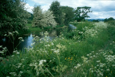
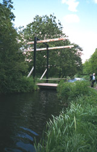
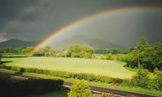

Our rain jackets went on and off all day long, in the rain and then sun. We didn't go to Montgomery (near the beginning of the day) or Welshpool (near the end of the day), both towns just a mile or so to the west. We did enjoy the views of Powis Castle, near Welshpool, in the distance. As we walked on the track through Leighton Woods we read that there were more monkey-puzzle trees there. We looked around and couldn't find them. After giving up and going on, we happened to look up. We were standing under them; we hadn't realized that they could be so tall! We ate our sandwiches at the Beacon Ring hill fort, an iron age fortification. In Buttington Bridge, we crossed the Severn, seeing it for the first time since the begining of our walk. We scurried across the bridge in a gap between cars, since there's no walkway, and the cars were whizzing by. We walked beside the Severn for a while, some of the time on a flood embankment. Then we came to the very pleasant Montgomery Canal. There's a wonderful towpath lined with wildflowers. There was a pretty little swing bridge. After just over a mile, we came to a set of locks, and turned down off the canal to Pool Quay.
We were staying in Pool Quay, at a B&B named "Severn View". When we came to the A road, it looked as if the village were to the right, so we turned that direction. It had just two minutes before started raining in earnest, so we were sort of eager to find our place. After one or two houses, a man standing in front of his house said to us "There's the Severn and here's the View". That was our introduction to Amos, a great fellow. We thoroughly enjoyed our time there. They fixed us tea and gave us big slices of fruitcake that Leslie had just bought at the church fair, down the road. Amos tried to make a fire for us to dry us off and warm us up, but apparently birds had built a nest in the chimney. The house quickly filled with smoke, so we had to open everything to air it out. Amos groaned at the prospect of cleaning out the chimney, which he had had to do for the same reason not long before. We went up to our room (suite, really) for showers, and happened to look out the window at an incredible rainbow. It framed the Breidden Hills beyond the Severn. Spectacular! Amos and Leslie fixed us an excellent dinner, with excellent wine. Amos talked some about his job as a helicopter instructor and Leslie and I talked some about our families. It was a very pleasant evening.
| Previous Day | Next Day | Home Page |